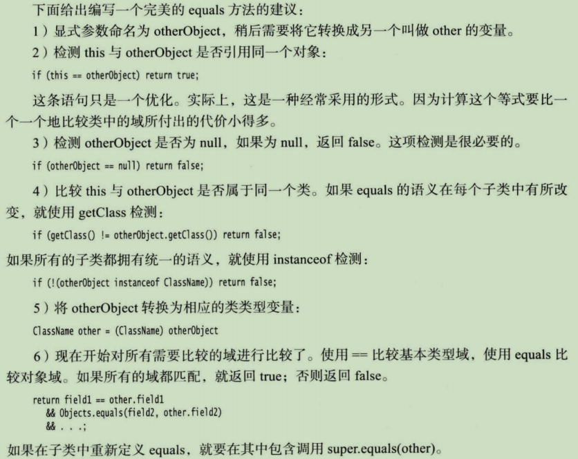
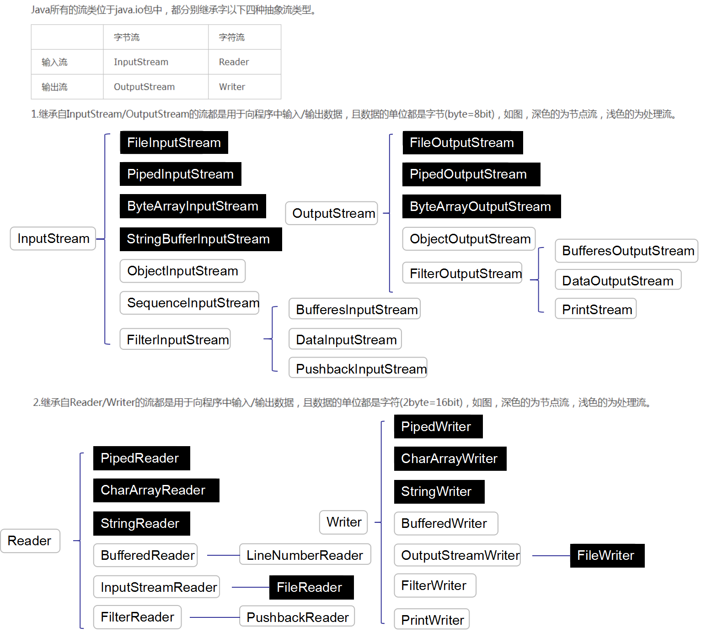

Java
基础语法
-
基本类型
整型: int\short\long\byte，依次需要4、2、8、1个字节大小；可以为数字字面量加下划线， 如 1_000_000表示一百万；在Java中没有无符号类型。 浮点类型: float\double，分别占4、8个字节；计算过程中会存在浮点误差(2.0-1.1=0.8999999999999999)， 对于涉及到金额的计算，采用BigDecimal类可以避免误差。BigDecimal是一个类，构造器 BigDecimal(int)、BigDecimal(double)、BigDecimal(long)、BigDecimal(String) ; 对于以浮点数来构造BigDecimal，不推荐BigDecimal(double), 因为许多小数无法完全写成二机制形式； 推荐使用BigDecimal(String), 例如BigDecimal("0.1"), 或者 BigDecimal.valueOf(0.1); 做运算的双方，一方采用上述形式，则结果也能正确显示: BigDecimal b1 = new BigDecimal(2.2), b2=new BigDecimal(1.0); System.out.println(b1.subtract(b2)); // 输出 1.200000000... BigDecimal b1 = new BigDecimal("2.2"), b2=new BigDecimal(1.0); System.out.println(b1.subtract(b2)); // 输出 1.2 char类型: 基于UTF-16，只能用来表示BMP平面中的字符，大小为两个字节。而且0xD800~0XDFFF没有对应字符， 打印结果为 ? . boolean:false和true，且整型值和布尔类型直接不能互转。 在Java中所有值采用大端对齐方式，即值的高位存放在地址低位，也称高位在前顺序(MSB)， -
变量初始化
声明一个变量之后，必须用赋值语句进行显示初始化，不能使用未初始化的变量。在Java中不区分变量的声明和定义。 -
常量
使用final关键字指示常量，表示只能被赋值一次，之后不能被修改；static final修饰的变量是类常量。 -
位运算符
&、|、^(异或)、~(非)；<<左移运算符，>>右移运算符，>>>右移，强制高位补0。 -
Unicode编码
1、Unicode 编码范围是：0-0x10FFFF，可以容纳 1114112 个字符，远超现有字符数量， 每个Unicode编码称为代码点，最多使用21位二进制位，表示某个文字系统下的某个字符； 2、Unicode 标准把代码点分成了17个代码平面（Code Plane），编号为 #0-#16。 每个代码平面包含 65,536（2^16）个代码点；Plane#0 叫做基本多语言平面（Basic Multilingual Plane，BMP） 大部分常用的字符都坐落在这个平面内，比如 ASCII 字符，汉字等，码点范围 0x0000~0xFFFF。
-
UTF-8 UTF-8: 可变长编码，使用1~4个字节表示一个字符，根据字符对应码点所处范围，采用不同长度字节进行编码：
例1：“汉”字的 Unicode 编码是 0x6C49。0x6C49 在 0x0800-0xFFFF 之间， 使用 3 字节模板：1110xxxx 10xxxxxx 10xxxxxx。将 0x6C49 写成二进制是：0110 1100 0100 1001， 用这个比特流依次代替模板中的 x，得到：11100110 10110001 10001001，即 E6 B1 89。 例2：Unicode 编码 0x20C30 在 0x010000-0x10FFFF 之间， 使用 4 字节模板：11110xxx 10xxxxxx 10xxxxxx 10xxxxxx。 将 0x20C30 写成 21 位二进制数字（不足 21 位就在前面补 0）：0 0010 0000 1100 0011 0000， 用这个比特流依次代替模板中的 x，得到：11110000 10100000 10110000 10110000，即 F0 A0 B0 B0。 解码：如果一个字节的第一位是 0 ，则说明这个字节对应一个字符； 如果一个字节的第一位1，那么连续有多少个 1，就表示该字符占用多少个字节。
-
UTF-16 用两个字节来编码 BMP 里的代码点，用四个字节编码其余平面里的代码点（暂不考虑字节顺序）。由于 BMP 里只有 65536 个代码点，所以直接把代码点转换成 2 个字节就可以了;对于BMP以外的平面，编码规则如下:
假设要编码的补充平面内的代码点为 X，具体的编码过程为： X 必定在 0x010000-0x10FFFF 之间 将 X 减去 0x010000，得到的数在 0x0-0xFFFFF 之间，正好可以用 20 个 bit 来表示 将高位的 10 个 bit 和 0xD800 相加，将低位的 10 个比特和 0xDC00 相加，得到的两个WORD称为一对代理对， 长度四个字节。如下图可知，高位word的范围是 0xD800~0XDBFF，低位word范围是 0xDC00~0xDFFF， 因此为了避免与代码点0x0000~0xFFFF的字符冲突，将0xD800~0xDFFF范围保留下来，作为代理区， 不用来表示BMP代码平面中的字符。 UTF16能表示的非BMP平面中的字符总数为(0xDBFF-0XD800+1)*(0XDFFF-0XDC00+1)=1048576， 能表示的BMP平面中的字符总数为2^16-(0XDFFF-0XD800+1)=63488个。 UTF-16存在大端对齐和小端对齐两种编码方式。
-
字符串
不可变字符串，即不能修改java字符串中的单个字符，不能像在C++中一样，直接修改str[ i ];
String类提供equals方法，判断两个字符串变量\常量 是否相等；equalsIgnoreCase方法则忽略大小写;
不用使用 == 来判断是否两个字符串相等；但可以使用 == 来判断字符串是否是null, if(str == null), 且如果一个字符串是null，则不能在其上调用任何方法;
使用str.charAt(i)可以获取str第i个字符(基0)；但如果str中存在字符需要两个代码单元来描述(非BMP平面中的字符)，则此种方法结果通常不正确，可以采用下列方法:
使用多个小段的字符串变量或者常量来构建字符串时，使用StringBuilder或StringBuffer效率更高，后者允许多线程方式执行添加或者删除字符的操作，单线程情况下，前者速度更快；两者API相同，使用方法如下:
StringBuilder builder = new StringBuilder();
builder.append("x");
builder.append(ch); // ch is a single character
builder.appedn(str);
String res = builder.toString();
- 读取输入
Scanner in = new Scanner(System.in);
String name = in.nextLine(); //读取一行
String first = in.next(); // 读取一个单词
int age = in.nextInt(); //读取整数，nextDouble()读取浮点数
-
文件输入与输出
-
控制流程
在Java中，不能在嵌套的两个块中声明同名的变量；但在C++中，可以在嵌套的块中重定义一个变量；在内层定义的变量会覆盖在外层定义的变量。
java提供了标签，可以通过break跳转出循环，直接跳转到标签处代码。
l1:
for(int i=1;i<10;i++){
System.out.println(i);
if(i==5)break l1;
}
System.out.println("now");
-
大数值
由于java中不能重载操作符，所以大数值类中的加减乘除，不能使用 + - * \，而是使用add、 substract、multiply、divide方法，对于求余，提供了mod方法(要求双方是BigInteger类型)；对于比较两个大数值，提供了compareTo方法，相等返回0，大于返回正数，小于返回负数。 -
数组
用法: //声明长度为10的数组，记住与C++中形式区别，int a[10] 或者 int *a = new int[10] int[] a=new int[10]; 整型数组，所有元素初始化为0；boolean数组元素初始化为false；对象数组元素初始化为null； for each循环: for(int x:a){xx}; 使用匿名数组可以在不创建新变量的情况下，重新初始化一个数组: old = new int[] {1, 2, 3};
在java中，允许声明数组的长度为0: int[] a=new int[0]; 数组拷贝: 通过 = 将一个数组变量拷贝给另一个数组变量，两个变量将引用同一个数组； 通过Arrays类的copyOf方法可以将一个数组的所有值拷贝到一个新的数组中。 Arrays.copyOf(T[] a, int length); //拷贝数组a中length个元素，新数组中多余元素默认初始化 Arrays.copyOf(T[] a, int start, int end); //拷贝[start, end)的元素 a = Arrays.copyOf(a, newLength); //对数组进行扩容 Arrays.fill(T[] a, T val); Arrays.equals(T[] a, T[] b); Arrays.toString(T[] a); //将数组转化为可打印的String类型 Arrays.deepToString(T[][] a); //针对多维数组 java中的多维数组类似C++中vector，也是数组的数组，是不规则的数组， 数组中每个元素也是一个数组，长度不定
对象与类
- 对象与对象变量
java中的对象变量可以类比C++中的对象指针，这也解释了把一个变量的值赋值给另一个变量，两个变量将引用同一个对象；java中变量为null即C++中的nullptr；所有java中的对象都存储在堆中，当一个对象包含另一个对象变量时，这个变量依然包含着指向另一个堆对象的指针。 - 不要编写返回引用可变对象的访问器方法，这样就会在类外可能改变该对象的状态；应该调用clone()方法，返回一个存放在另一个位置上的对象副本。
- 静态域，以static修饰，是属于类的，而非某个实例，或者该类的所有实例共享该static变量；
- 静态方法，其没有隐式参数this参数(类似C++中this指针)，因此 static 方法中不能访问非静态域；一般通过类名而非某个实例来调用static method。
- 方法参数
采用call by value方式传递参数；但是考虑参数类型是一个对象类型，传递一个对象变量，类似C++中传递一个指向对象的指针拷贝，方法内部修改对象状态会实际修改该对象；但基础类型不是对象，因此在方法中修改不会影响外部变量。 - 通过this(...)可以在构造方法中调用另一个构造方法
- 初始化块， 以{}包括对象变量的初始化语句，只要构造类的对象，这些块就会执行；
/*
这个类没有main方法，而是通过执行静态初始化块来打印语句
*/
public class hello{
static{
System.out.println("hello world");
System.exit(0); //忽略没有定义main方法的错误
}
}
- 静态导入
import static java.lang.System.* //导入System中的静态方法和静态域
-
包作用域
如果没有指定public或private，则这个部分(类、方法或变量)可以被同一个包中的所有方法访问。 java中的package与import类似C++中的namespace、using指示。 -
extends
java中所有继承都是公有继承；
java中class是不支持多继承的，但可以实现(implements)多个接口
java中interface是支持多继承的，一个接口可以继承多个接口 -
类方法和实例域的可见性
package代表没有提供显示的访问说明符；绿色代表可访问，红色代表不可访问； java中的protected概念比C++中的安全性差 -
super
通过super关键字来调用父类中的public方法；
子类的构造器不能访问父类的私有域，通过super来实现对父类构造器的调用，这条语句也必须是子类构造器的第一条语句。
在java中，不需要通过虚函数来实现多态，动态绑定是默认的处理方式，对象变量是多态的，一个父类对象变量可引用父类对象或者子类对象，即在调用方法时，根据对象变量指向的实际类型来选择调用哪个方法；
如果子类的构造器没有显式地调用超类的构造器， 则将自动地调用超类默认（没有参数 )的构造器。 如果超类没有不带参数的构造器， 并且在子类的构造器中又没有显式地调用超类的其他构造器 则 Java 编译器将报告错误。 -
方法调用过程
-
方法覆写
方法的名字和参数列表称为方法的签名；如果在子类中定义了一个与超类签名相同的方法，那么子类中的这个方法就覆盖了超类中的这个相同签名的方法。
不过，返回类型不是签名的一部分，因此在覆盖方法时，一定要保证返回类型的兼容性。允许子类将覆盖方法的返回类型定义为原返回类型的子类型。 -
阻止继承: final类和方法
以final修饰的类不能被继承，其中的所有方法自动成为final方法，即不能被子类覆盖；final类中的域并不会成为final。 -
强制类型转换
将一个值存入变量时， 编译器将检查是否允许该操作。将一个子类的引用赋给一个超类变量， 编译器是允许的。 但将一个超类的引用(静态类型是超类，但动态类型是子类)赋给一个子类变量， 必须进行类型转换， 这样才能够通过运行时的检査；
但是在继承链上进行向下的数据转换，例如将一个引用超类对象的变量赋给一个子类变量，即时有类型转换，依旧不能成功，而会抛出异常； 所以需要通过 instanceof, 先判断能否成功转换。 -
abstract
abstract修饰的类或方法称为抽象类或抽象方法；
类即使不包含抽象方法，也可以声明为抽象类；
抽象类不能被实例化，但可以定义一个抽象类对象变量，其只能引用非抽象子类对象。抽象类对象变量在调用方法时调用的一定是子类中实现了的抽象方法。 一个类如果包含抽象方法，必须被声明为抽象类；
任何子类必须重写抽象父类的全部抽象方法，否则就将子类也声明为抽象类。如果抽象父类中没有抽象方法，则与普通父类没有区别。（抽象父类不能被实例化）。 -
equals方法
 -
对象包装器与自动装箱
基本类型都有一个与之对应的类，称为包装器；
Integer、Long、Float、Double、Short、Byte、Character 、Void 和 Boolean (前 6 个类派生于公共的超类 Number)。 对象包装器类是不可变的，即一旦构造了包装器，就不允许更改包装在其中的值。同时， 对象包装器类还是 final , 因此不能定义它们的子类。 泛型类中类型参数不能是基本类型，因此可以提供包装器类型；
自动装箱: 容器添加基本类型元素时，会自动将基本类型转换为包装器类型；
自动拆箱: 将一个包装器对象赋给一个基本类型对象变量时，会自动执行类型转换。
装箱和拆箱是编译器认可的，而不是虚拟机。编译器在生成类的字节码时， 插人必要的方法调用。虚拟机只是执行这些字节码。 -
可变参数
/*
这里的 ... 代表可以接受任意数量的参数，与C++类似。在java中，其含义等同于数组，
即 Object...等同于Object[]，因此更类似C++中的initialize_list，要求参数类型相同
*/
public PrintStream printf(String fmt, Object... args){xxx}
反射
在运行时分析类的能力；
在运行时查看对象， 例如， 编写一个 toString 方法供所有类使用；
实现通用的数组操作代码；
利用 Method 对象， 这个对象很像C++中的函数指针。
- Class类
在程序运行期间，Java 运行时系统始终为所有的对象维护一个被称为运行时的类型标识。 这个信息跟踪着每个对象所属的类。 虚拟机利用运行时类型信息选择相应的方法执行。 然而， 可以通过专门的 Java 类访问这些信息。保存这些信息的类被称为 Class, 类似C++中的type_info类；
// getClass 方法与 C++ 中的 typeid 运算符等价；但是type_info 只能以字符串的形式显示一个类型的名字，
// 而不能创建那个类型的对象
Class c1 = e.getClass();
// java.lang.Ciass 1.0
static Class forName(String className) // 返回描述类名为 className 的 Class 对象。
Object newlnstance() // 返回这个类的一个新实例。
// java.lang.reflect.Constructor 1.1
Object newlnstance(Object[] args) // 构造一个这个构造器所属类的新实例。参数：args 这是提供给构造器的参数。
- 利用反射分析类的能力
import java.util.*;
import java.lang.reflect.*;
/**
* This program uses reflection to print all features of a class.
*
在 java.lang.reflect 包中有三个类 Field、 Method 和 Constructor 分别用于描述类的域、方
法和构造器。 这三个类都有 getName 的方法，用来返回项目的名称。Field 类有 getType 方法，
用来返回描述域所属类型的 Class 对象。
Method 和 Constructor 类有能够报告参数类型的方法，Method 类还有一个可以报告返回类型的方法以及一个叫
做 getModifiers 的方法，它将返回一个整型数值，用不同的位开关描述 public 和 static 这样
的修饰符使用状况，利用 Modifier.toString 方法将修饰符打印出来。
Class类中的 getFields、 getMethods 和 getConstructors 方法将分别返回类提供的
public域、方法和构造器数组，其中包括超类的公有成员。
Class 类的 getDeclareFields、getDeclareMethods 和 getDeclaredConstructors 方法将分别返回类中声明的全部域、
方法和构造器，其中包括私有和受保护成员，但不包括超类的成员。
*/
public class ReflectionTest {
public static void main(String[] args) {
// read class name from command line args or user input
String name;
if (args.length > 0) name = args[0];
else {
Scanner in = new Scanner(System.in);
System.out.println("Enter class name (e.g. java.util.Date): ");
name = in.next();
}
try {
// print class name and superclass name (if != Object)
Class cl = Class.forName(name);
Class supercl = cl.getSuperclass();
String modifiers = Modifier.toString(cl.getModifiers());
if (modifiers.length() > 0)
System.out.print(modifiers + " ");
System.out.print("class " + name);
if (supercl != null && supercl != Object.class)
System.out.print(" extends " + supercl.getName());
System.out.println("\n{\nConstructor");
printConstructors(cl);
System.out.println("Methods");
printMethods(cl);
System.out.println("Fields");
printFields(cl);
System.out.println("}");
} catch (ClassNotFoundException e) {
e.printStackTrace();
}
System.exit(0);
}
/**
* Prints all constructors of a class
*
* @param cl a class
*/
private static void printConstructors(Class cl) {
Constructor[] constructors = cl.getDeclaredConstructors();
for (Constructor c : constructors) {
System.out.print(" ");
String name = c.getName();
String modifiers = Modifier.toString(c.getModifiers());
if (modifiers.length() > 0) System.out.print(modifiers + " ");
System.out.print(name + "(");
// print parameter types
Class[] paramTypes = c.getParameterTypes();
for (int j = 0; j < paramTypes.length; j++) {
if (j > 0) System.out.print(", ");
System.out.print(paramTypes[j].getName());
}
System.out.println(");");
}
}
/**
* Prints all methods of a class
*
* @param cl a class
*/
private static void printMethods(Class cl) {
Method[] methods = cl.getDeclaredMethods();
for (Method m : methods) {
System.out.print(" ");
Class retType = m.getReturnType();
String name = m.getName();
// print modifiers, return type and method name
String modifiers = Modifier.toString(m.getModifiers());
if (modifiers.length() > 0) System.out.print(modifiers + " ");
System.out.print(retType.getName() + " " + name + "(");
// print parameter types
Class[] paramTypes = m.getParameterTypes();
for (int j = 0; j < paramTypes.length; j++) {
if (j > 0) System.out.print(", ");
System.out.print(paramTypes[j].getName());
}
System.out.println(");");
}
}
/**
* Prints all fields of a class
*
* @param cl a class
*/
private static void printFields(Class cl) {
Field[] fields = cl.getDeclaredFields();
for (Field f : fields) {
Class type = f.getType();
String name = f.getName();
System.out.print(" ");
String modifiers = Modifier.toString(f.getModifiers());
if (modifiers.length() > 0) System.out.print(modifiers + " ");
System.out.println(type.getName() + " " + name + ";");
}
}
}
- 使用反射编写泛型数组代码
public static Object goodCopyOf(Object a, int newLength)
{
Class cl = a.getClass();
if (!cl.isArray()) return null;
Class componentType = cl.getComponentType();
int length = Array.getLength(a);
Object newArray = Array.newInstance(componentType, newLength);
System.arraycopy(a, 0, newArray, 0, Math.min(length, newLength));
return newArray;
}
接口与lambda
接口并非是类，而是对类的一组需求描述，采用关键字interface，而非class。
- 接口中的所有方法自动地属于 public。 因此，在接口中声明方法时，不必提供关键字public；
但是实现(implements)接口的类必须为该方法声明访问修饰符，否则默认就是包可见。 - 接口不能含实例域，但可以包含常量，并且常量类型自动设为public static final；从Java SE8起，允许在接口中实现方法，并且允许增加静态方法；
- 接口不是类，尤其不能使用 new 运算符实例化一个接口，却能声明接口的变量，接口变量必须引用实现了接口的类对象；
可以使用instance 检查一个对象是否实现了某个特定的接口;
与可以建立类的继承关系一样，接口也可以被扩展(extends)，且一个接口可以继承多个接口。 - 一个类只可以有一个父类(通过extends关键字继承)，但可以实现多个接口，以逗号分隔，
class employee implements Comparable, Cloneable{..}
通过实现多个接口，java来近似C++中的多重继承。 - 可以为接口方法提供一个默认实现。 必须用 default 修饰符标记这样一个方法(放在返回值类型之前)；
为接口增加一个非默认方法不能保证源代码兼容；即原先的接口中增添了新的非默认方法，而实现了该接口的类没有实现该方法，将不能通过编译。
默认方法冲突: 不同接口中出现了重名且参数相同的方法，且至少一个接口提供了默认实现，或者接口中的方法和父类中的方法重名， 解决规则是：
父类优先，忽略接口中的默认方法；不同接口中的冲突方法会导致编译器报错，不过如果所有接口中这个方法都没有默认实现，则不会引起冲突；
实现类有有两个选择：实现这个方法，或者干脆不实现。后者说明这个类本身就是抽象的。 -
Comparartor接口，其中包含一个compare方法；其与Comparable接口(其包含compareTo方法)的区别，
java类实现Comparable接口，好比C++中的类进行了比较符重载；而在对容器中元素进行排序时，可能不需要按照默认比较方式， 而是提供一个比较器对象，通过比较器中的compare方法来比较两个元素；比较器即是实现了Comparator接口的类，好比在C++中提供一个 lambda表达式或者一个function class对象如less< int>(). -
clone方法，其是Object的protected方法，因此子类的实例不能调用该方法，且该方法是浅拷贝；
因此子类需要自定义一个public修饰的clone方法，来实现深拷贝。
Cloneable接口中不提供clone方法，只是作为标记接口；如果一个对象请求克隆， 但没有实现这个接口， 就 会生成一个受査异常。
所有数组类型都有一个public的clone方法，可以建立一个数组的副本。 -
lambda表达式
语法: (参数列表) -> 表达式
如果可以推导出一个 lambda 表达式的参数类型，则可以忽略其类型。
如果方法只有一 参数， 而且这个参数的类型可以推导得出，那么甚至还可以省略小括号。
无需指定 lambda 表达式的返回类型。lambda 表达式的返回类型总是会由上下文推导得出。 - 如果一个 lambda 表达式只在某些分支返回一个值， 而在另外一些分支不返回值，这是不合法的。
- 对于只有一个抽象方法的接口， 需要这种接口的对象时， 就可以提供一个(匿名)lambda 表达式。 这种接口称为函数式接口 （ functional interface )。这样调用该接口中的抽象方法时，实际上通过lambda表达式来执行。
// 实际中，根据参数\返回值类型，可以选择不同的预先定义的接口
public static void main(String[] args){
int n=10;
repeat(n, System.out::println);
repeat2(3, ()-> System.out.println("test"));
}
private static void repeat(int n, Consumer<Integer> consumer){
for(int i=0;i<n;i++)consumer.accept(i);
}
private static void repeat2(int n, Runnable runnable){
for(int i=0;i<n;i++)runnable.run();
}
- 方法引用
向函数接口提供一个现成的方法， object::instanceMethod\Class::staticMethod\Class::instanceMethod;
方法引用等价于提供方法参数的 lambda 表达式,
System.out::println 等价于 x -> System.out.println(x)。
Math::pow 等价于（x，y) -> Math.pow(x, y)。
对于第 3 种情况， 第 1 个参数会成为方法的目标。例如，String::compareToIgnoreCase 等同于 (x, y) -> x.compareToIgnoreCase(y)
构造器引用类似方法引用，只不过方法名为 new - lambda变量作用域
lambda表达式包含3个部分：一个代码块；参数; 自由变量的值，这是指非参数而且不在代码中定义的变量。(类似C++中的值捕获)
在Java中，要确保所捕获的值是明确定义的，在lambda 表达式中，只能引用值不会改变的变量，捕获的变量必须实际上是最终变量， 变量初始化之后就不会再为它赋新值;
因为如果在 lambda 表达式中改变变量， 并发执行多个动作时就会不安全。
lambda 表达式中声明与一个局部变量同名的参数或局部变量是不合法的。
内部类
-
内部类
内部类方法可以访问该类定义所在的作用域中的数据， 包括私有的数据。
内部类可以对同一个包中的其他类隐藏起来。
当想要定义一个回调函数且不想编写大量代码时，使用匿名 （anonymous) 内部类比较便捷。
内部类的对象有一个隐式引用， 它引用了实例化该内部对象的外围类对象。通过这个指针，可以访问外围类对象的全部状态。 外围类的引用在构造器中设置。编译器修改了所有的内部类的构造器， 添加一个外围类 引用的参数。
在Java中，static 内部类没有这种附加指针，这种内部类 类似C++中的嵌套类。
内部类是一种编译器现象，与虚拟机无关。编译器将会把内部类翻译成用 $ (美元符号）分隔外部类名与内部类名的常规类文件。
编译器为了引用外围类， 生成了一个附加的实例域 this$0 (名字this$0 是由编译器合成的，在自己编写的代码中不能够引用它。
编译器在外围类添加静态方法 access$000(具体名称视编译器决定), 它将返回作为参数传递给它的对象域;而内部类就可以调用这个方法。 这样做存在安全风险，任何人都可以通过调用 access$000方法很容易地读取到私有域 beep; 例如攻击代码与被攻击类放在同一个包中，创建一个用虚拟机指令调用access$000方法，访问到outerClass的private变量。 -
局部内部类
在方法中定义的类，不能用 public 或 private 访问说明符进行声明。它的作用域被限定在声明这个局部 类的块中。
局部类有一个优势， 即对外部世界可以完全地隐藏起来；
此外它们不仅能够访问包含它们的外部类，还可以访问局部变量。不过，那些局部变量必须事实上为 final。这说明，它们一旦赋值就绝不会改变。
事实上即时方法已经结束，但内部类对象依旧可以访问局部变量，因为编译器在局部类中为每一个局部变量建立了相应的数据域(如例子中 val$len), 并将局部变量拷贝到构造器中， 以便将这些数据域初始化为局部变量的副本 -
匿名内部类
语法格式:
SuperType obj = new SuperType(construction parameters) {
inner class methods and data
}
SuperType 可以是 ActionListener 这样的接口， 于是内部类就要实现这个接口。 SuperType 也可以是一个类，于是内部类就覆写父类的方法。 对于接收函数式接口为参数的方法，obj作为SuperType的匿名子类对象，可以作为参数传递， 但现在使用匿名lambda表达式更方便。
class outerClass{
private int beep;
public outerClass(int _beep){
this.beep=_beep;
}
public void test(){
innerClass ic = new innerClass();
ic.fun();
}
public void test2(int len){
class localInnerClass{
public void action(){
System.out.println("outerClass::localInnerClass::len="+len);
}
}
localInnerClass lic = new localInnerClass();
lic.action();
}
public class innerClass{
public void fun(){
System.out.println("outerClass::innerClass::beep="+beep);
}
}
}
// 通过code/ReflectionTest来查看外部类和内部类
// 输出结果
class outerClass
{
Constructor
public outerClass(int);
Methods
static int access$000(outerClass);
public void test();
Fields
private int beep;
}
// 输入类名 outerClass$innerClass
public class outerClass$innerClass
{
Constructor
public outerClass$innerClass(outerClass);
Methods
public void fun();
Fields
final outerClass this$0;
}
// outerClass$1localInnerClass， $1表示第一个局部内部类
class outerClass$1localInnerClass
{
Constructor
outerClass$1localInnerClass(outerClass, int);
Methods
public void action();
Fields
final int val$len;
final outerClass this$0;
}
- 静态内部类
有时候， 使用内部类只是为了把一个类隐藏在另外一个类的内部，并不需要内部类引用 外围类对象。为此，可以将内部类声明为 static, 以便取消产生的引用。
只有内部类可以声明为 static。静态内部类的对象除了没有对生成它的外围类对象 的引用特权外， 与其他所冇内部类完全一样。
异常
-
异常分类
所有的异常都是由 Throwable 继承而来，但在下一层立即分解为两个分支: Error 和 Exception;

Error类层次结构描述了 Java 运行时系统的内部错误和资源耗尽错误。 应用程序不应该抛出这种类型的对象。
由程序错误导致的异常属于RuntimeException(如数组越界、除0等); 而程序本身没有问题，但由于像I/O错误(如文件不存)在这类问题导致的异常属于其他异常。
Java将派生于Error类或RuntimeException类的所有异常称为非受查(unchecked)异常，所有其他的异常称为受查(checked)异常。 编译器将核查是否为所有的受査异常提供了异常处理器，即要求一个方法必须声明所有可能抛出的受查异常，对于一个可能抛出受查异常的方法，例如反射中通过类名来构造对象，可能存在该类不存在的情况，因此编译器要求这部分代码要么捕获异常，要么抛出异常。 -
抛出异常
在java中，没有 throws 说明符的方法将不能抛出任何受查异常。
如果在子类中覆盖了超类的一个方法，子类方法中声明的受查异常不能比超类方法中声明的异常更通用；并且如果超类方法没有抛出任何受查异常，子类也不能抛出任何受查异常。
当 finally 子句包含 return 语句时，将会出现一种意想不到的结果，假设利用 return语句从try语句块中退出。在方法返回前，finally子句的内容将被执行。
带资源的try语句: 假设资源属于一个实现了AutoCloseable接口的类，AutoCloseable接口有一个方法，
void close() throws Exception，
try块正常退出或抛出异常时，都会自动调用close方法，关闭资源。
//语法
try{
..
}catch(Exception e){
..
}finally{
..
}
try(Resource res=..){
// work with res
}
- 断言
断言机制允许在测试期间向代码中插入一些检査语句。当代码发布时，这些插入的检测 语句将会被自动移走。
assert 条件; assert 条件: 表达式;
这两种形式都会对条件进行检测， 如果结果为 false, 则抛出一个 AssertionError 异常。
在第二种形式中，表达式将被传入 AssertionError 的构造器，并转换成一个消息字符串。assert x>0: x;
表达式部分的唯一目的是产生一个消息字符串。AssertionError 对象并不存储表达式的值，因此，不可能在以后得到它。
在默认情况下，断言被禁用。可以在运行程序时用 -enableassertions 或 -ea 选项启用;
在启用或禁用断言时不必重新编译程序。启用或禁用断言是类加载器(class loader) 的功能。当断言被禁用时，类加载器将跳过断言代码， 因此，不会降低程序运行的速度。
泛型程序设计
- 泛型方法
泛型方法可以定义在普通类中，也可以定义在泛型类中。
public static < T > T getMiddle() {..}
类型变量 < T >放在修饰符之后，返回类型之前；当调用泛型方法时，在方法名前的尖括号中放人具体的类型，
obj.< String >getMiddle(); 不过大多数情况下，方法调用中可以省略诸如< String >这样的类型参数(即是类型推断)。 - 泛型优点
泛型可以增强编译时错误检测，减少因类型问题引发的运行时异常；泛型可以避免类型转换；可以使用泛型算法，增加代码复用性 -
相关名词
原始类型: 擦除实际类型变量的泛型就是一个原始类型 class Box
{} Box b = new Box(); //这个Box就是Box 的原始类型 泛型类型：Person< T >整个就是泛型类型。 类型参数：Person< T >中的T就类型参数。 参数化类型：Person< Man >整个成为参数化类型(ParameterizedType) 实际类型参数：Person< Man >中的Man就称之为实际类型参数 -
类型参数的限定
对类型参数加以约束，类似C++中的模板特化，但功能更强，例如可以限制类型变量是实现了某个接口。
public static < T extends Comparable > T fun(){..} < T extends BoundingType >, 表示T是绑定类型的子类型，绑定类型可以是类也可以是接口；一个类型参数或通配符(?)可以有多个限定； T extends Comparable & Clonable, 限定类型用“ &” 分隔，而逗号用来分隔实际类型参数。 -
泛型代码和虚拟机
1、泛型擦除: 无论何时定义一个泛型类型，都自动提供了一个相应的原始类型(raw type)。 原始类型的名字就是删去类型参数后的泛型类型名，同时会擦除(erased)类型参数。 2、擦除类型参数后，会用第一个限定的实际类型参数来替换，如果没有给定限定，就采用 Object 替换。 综合1、2可知，虚拟机中没有泛型，只有普通的类和方法。 3、并且为了效率，应该将没有方法的接口放在边界列表的末尾，例如Cloneable应该放在Compareable之后， 否则将使用Cloneable对象来替换类型变量，方法中必要时要插入强制类型转换。 4、桥方法，因为类型擦除与多态会发生冲突；
public class hello {
public static void main(String[] args) {
parent< String > p = new child();
p.say("hello");
/*
child的方法表中有两个方法，say(String str)和say(Object str),后者是父类泛型擦除后的方法
按理来说，这段测试代码应该不能通过编译，因为要实现多态的话，所调用的方法必须在子类中重写，
但是在这里Child类并没有重写Parent类中的say(Object value)方法，只是单纯的继承而已，
并且新加了一个参数不同的同名方法。但是结果是可以正常运行。
原因是编译器在Child类中自动生成了一个桥方法，来避免类型擦除与多态发送冲突。
public void say(Object value)
{
sayHello((String) value);
}
*/
/*
另外如果父类中存在一个返回类型T的方法，子类中试图重写这个方法
这样子类的方法表中将存在两个方法，除了返回类型不同，方法签名是相同的，
但对于虚拟机来说，是用返回值+方法名+参数的方式来计算函数签名的，
因此，编译器可能产生两个仅返回类型不同的方法字节码，虚拟机能够正确地处理这一情况
*/
}
}
class parent<T>{
public void say(T str){
System.out.println("parent:"+str);
}
}
class child extends parent{
public void say(String str){
System.out.println("child:"+str);
}
}
-
泛型的约束与局限性
1、不能用基本类型实例化类型参数 2、运行时类型查询只适用于原始类型，试图查询一个对象是否属于某个泛型类型时， 使用 instanceof 会得到一个编译器错误；如果使用强制类型转换会得到一个警告； getClass方法总是返回原始类型。 3、虽然声明参数化类型的数组是合法的，但不能实例化参数化类型的数组的数组。 安全有效方法是使用ArrayList，例如 ArrayList< Pair< String > > arr = new ArrayList<>(); 4、可以使用 @SafeVarargs 注解来消除创建泛型数组的有关限制，当方法中的参数是可变，且是泛型类型。 5、不能实例化类型变量，如 new T()或者T.class(在C++中，是可以实例化一个模板类型的)； 那如何在泛型类中初始化参数类型呢？ 让调用者提供一个构造器表达式，例如Pair< T >有一个makePair方法，接受一个Supplier< T >， 这是一个函数式接口，表示一个无参数而且返回类型为T的函数。这样可以传入实际类型的构造器， 例如Pair< String > p = Pair.makePair(String::new); 6、不能构造泛型数组，就像不能实例化一个泛型实例一样，也不能实例化数组。 7、泛型类的静态上下文中类型变量无效，即不能在静态域或方法中引用类型参数。 8、既不能抛出也不能捕获泛型类对象。实际上，甚至泛型类扩展 Throwable 都是不合法的。 但是允许类型变量扩展Throwable。 public class Problem< T > extends Exception // error public static < T extends Throwable > void doWork(T t) throws T // OK 9、可以消除对于受查异常的检测 对于一个不允许抛出受查异常的方法，需要捕获所有的受查异常； 但又希望由上层调用来处理异常，可以利用下面方法，将受查异常伪装成非受查异常抛出。 class Block{ @SuppressWamings("unchecked") public static < T extends Throwable > void throwAs(Throwable e) throws T { throw (T) e; } } // 在其他类某个方法中 try{ .. }catch(Throwable t){ Block.< RuntimeException >throwAs(t);
// 假设try语句中发生了受查异常，如 FileNotFoundException // 这里通过抛出泛型异常(此时类型参数确定为 RuntimeException, 是非受查异常)欺骗了编译器， // 来实际抛出FileNotFoundException。 // 这里并没有发生强制类型转换，因为类型擦除后，原始类型都为Throwable， // 故e的实际类型是 FileNotFoundException还是RuntimeException，作为Throwable的子类， // 由于多态的性质，上层调用接收到异常后，能正确获取实际异常类型。 // 这种方法避免编写捕获多个异常并包装为非受查异常抛出的繁琐代码， // 通过initCause来完成包装 } 10、注意擦除后的冲突 当泛型类重载了超类中的方法时，若重载的参数类型是T，则会被擦除为Object。这可能会导致冲突， 例如equals(T t)方法会与Object类中的equals(Object o)发送冲突； 此外，要想支持擦除的转换，就需要强行限制一个类或类型变量不能同时成为两个接口类型的子类， 如果这两个接口是同一接口的不同参数化。 因为有可能与合成的桥方法产生冲突: 例如，实现了 Compamble< X > 的类可以获得一个桥方法： public int compareTo(Object other) { return compareTo((X) other); } 对于不同类型的 X 不能有两个这样的方法。 -
泛型类型的继承规则
无论 S 与 T 有什么联系(如继承关系)，通常，Pair< S > 与 Pair< T >没有什么联系，不能将一方赋给另一方； -
通配符类型
?: extends: Pair< ? extends Employee > 要求类型参数必须是Employee的子类 super: Pair< ? super Manager > 要求类型参数必须是Manager的超类型。 无限定通配符，如 Pair< ? >，这种类型的变量无法调用setter方法，但可以调用getter方法，返回一个Object。 -
PECS原则
Producter extends Customer super 声明参数化类型时: 如果你只需要从集合中获得类型T , 使用< ? extends T>通配符 如果你只需要将类型T放到集合中, 使用< ? super T>通配符 如果你既要获取又要放置元素，则不使用任何通配符。例如List< String >
集合框架
Java集合库是将接口与实现分离。
Java集合框架包含两种根接口，Collection和Map，一般称Collection为集合，其继承了Iterable接口，实现了iterator()方法，主要包含三种子接口，List、Set、Queue，实现了Collection接口或其子接口的类称为集合类；而Map与Collection是平行的，其没有实现 iterator方法，不能直接进行迭代，但是其有三种方法可以得到类型为Set的视图，通过Set的iterator实现对Map的迭代。对于实现了Map接口的类有时也称为集合实现类。
-
Iterator接口 包含next、hasNext、remove、forEachRemaining四个方法；
编译器简单地将“ foreach” 循环翻译为带有迭代器的循环，因此 “ for each” 循环可以与任何实现了 Iterable 接口的对象一起工作。
Iterable接口仅包含一个iterator方法，返回一个Iterator；Collection 接口扩展了 Iterable 接口。因此，对于标准类库中的任何集合都可以使用“ foreach” 循环。
应该将 Java 迭代器认为是位于两个元素之间。 当调用 next 时，迭代器就越过下一个元素，并返回刚刚越过的那个元素的引用；
对 next 方法和 remove 方法的调用具有互相依赖性。如果调用 remove 之前没有调用 next 将是不合法的。如果这样做，将会抛出一个 IllegalStateException 异常。 -
ArrayList与Vector
这里只Java中的Vector，其所有方法都是同步的，可以由多个线程安全访问一个Vector对象，如果由一个线程访问 Vector, 代码要 在同步操作上耗费大量的时间。此时建议使用ArrayList。 -
映射视图
集合框架不认为Map本身是一个集合，不过可以得到映射的视图，这是实现了Collection接口或某个子接口的对象。
有3种视图： 键集、 值集合（不是一个集） 以及键/值对集。键和键/值对可以构成一个 集，因为映射中一个键只能有一个副本。 下面的方法：
Set< K > keySet()、Collection< V > values()、Set< Map.Entry< K, V >> entrySet()，
会分别返回这 3 个视图，通过 for each循环可以遍历每一个元素。（条目集的元素是实现 Map.Entry 接口的类的对象。）
对于这三种视图，可以从中删除元素所删除的值及其对应的key，将从映射中删除，不过不能增加任何元素。
对于Map.Entry< K,V >对象可以用setValue方法修改值，并返回原来的值。 -
弱散列映射
1 WeakHashMap的key和value都可以为null,而HashMap的key可以为null,value不可为null。
2 此种Map的特点是，当除了自身有对key的引用外，此key没有其他引用那么此map会自动丢弃此值，所以比较适合做缓存。
3 WeakHashMap实现了Map接口，基于hash-table实现，在这种Map中，key的类型是WeakReference。
如果对应的key被回收，则这个key指向的对象会被从Map容器中自动移除，WeakHashMap的行为一定程度上基于垃圾收集器的行为。
4 弱引用（WeakReference）的特性是：当gc线程发现某个对象只有弱引用指向它，那么就会将其销毁并回收内存(加入到ReferenceQueue)。 -
标识散列映射
在这个类中， 键的散列值不是用hashCode函数计算，而是用 System.identityHashCode 方法计算的。 这是 Object.hashCode 方法根据对象的内存地址来计算散列码时所使用的方式。 而且在对两个对象进行比较时，IdentityHashMap 类使用 ==, 而不使用 equals。 也就是说，不同的键对象， 即使内容相同，也被视为是不同的对象。 在实现对象遍历算法（如对象串行化）时， 这个类非常有用，可以用来跟踪每个对象的遍历状况。
-
视图与包装器
如前所述，集合的一些方法会返回一个实现了某个原始接口(如Collections，Set，Map)的类对象，只能使用该接口中定义的方法来访问、修改原集合中的元素；有的视图允许删除元素，但所有视图都不能增加集合中的元素。这种对象称为视图。
视图有以下几种应用:1、轻量级集合包装器 2、子范围， subList(fromIndex, toIndex)方法，可以获得list[fromIndex, toIndex)范围的元素。 3、不可修改的视图，这些视图对现有集合增加了一个运行时的检查。如果发现试图对集合进行修改， 就抛出一个异常，同时这个集合将保持未修改的状态。 4、同步视图: 使用视图机制来确保常规集合的线程安全，而不是实现线程安全的集合类。 例如，Collections 类的静态synchronizedMap方法可以将任何一个映射表转换成具有同步访问方法的 Map； 现在，就可以由多线程访问 map 对象了。像get和put这类方法都是同步操作的，即在另一个线程调用另一个方法之前， 刚才的方法调用必须彻底完成。 5、checkedList。
-
集合与数组的转换
String[] values={..}; HashSet< String > staff=new HashSet<>(Arrays.asList(values));
Object[] vec=staff.toArray(); String[] values = staff.toArray(new String[0]); //这里也可以是staff.size(); -
遗留的集合
Hashtable，与HashMap作用一致，但其方法是同步的；
遗留集合使用 Enumeration 接口对元素序列进行遍历。Enumeration 接口有两个方法， 即 hasMoreElements 和 nextElement。 这两个方法与 Iterator 接口的 hasNext 方法和 next 方法十 分类似。
BitSet，位向量，和C++中bitset模板功能一致。
并发
-
Thread(Runnable target)构造一个新线程，用于调用给定目标的run方法。
void start( )启动这个线程，将引发调用run()方法。这个方法将立即返回，并且新线程将并发运行。
void run( )调用关联 Runnable的run方法。
不要调用 Thread 类或 Runnable 对象的 run 方法。 直接调用 run 方法， 只会执行同 一个线程中的任务， 而不会启动新线程。应该调用 Thread.start() 方法。线程start()方法的含义是：当前线程（即parent线程）同步告知Java虚拟机，只要线程规划器空闲，应立即启动调用 start()方法的线程。
void join(): 在A线程中调用了B线程对象的join()方法，则A线程要等待B线程终止以后才能返回。 -
构造线程
一个新构造的线程对象是由其parent线程来进行空间分配的，而child线程继承了parent是否为Daemon、优先级和加载资源的contextClassLoader以及可继承的ThreadLocal，同时还会分配一个唯一的ID来标识这个child线程。至此，一个能够运行的线程对象就初始化好了。
private void init(ThreadGroup g, Runnable target, String name,long stackSize, AccessControlContext acc) {
if (name == null) {
throw new NullPointerException("name cannot be null");
}
// 当前线程就是该线程的父线程
Thread parent = currentThread();
this.group = g;
// 将daemon、priority属性设置为父线程的对应属性
this.daemon = parent.isDaemon();
this.priority = parent.getPriority();
this.name = name.toCharArray();
this.target = target; setPriority(priority);
// 将父线程的InheritableThreadLocal复制过来
if (parent.inheritableThreadLocals != null)
this.inheritableThreadLocals=ThreadLocal.createInheritedMap(parent. inheritableThreadLocals);
// 分配一个线程ID
tid = nextThreadID();
}
-
suspend、resume、stop
分别用来挂起、恢复、停止线程，作为过期API不建议使用，有负面效果:以suspend()方法为例，在调用后，线程不会释放已经占有的资源（比如锁），而是占有着资源进入睡眠状态，这样容易引发死锁问题。同样，stop()方法在终结 一个线程时不会保证线程的资源正常释放，通常是没有给予线程完成资源释放工作的机会， 因此会导致程序可能工作在不确定状态下。
通过标识位或者中断可以使得线程在终止时有机会去清理资源，而不是武断地将线程终止。 -
中断线程
线程正常运行结束或者出现了在方法中没有捕获的异常时，线程将终止。没有可以强制线程终止的方法。然而，interrupt 方法可以用来请求终止线程。
interrupt: 本线程中断自身是被允许的，且"中断标记"设置为true; 其它线程调用本线程的interrupt()方法时，会通过checkAccess()检查权限。这有可能抛出SecurityException异常。 若线程被wait、join、sleep方法阻塞时，调用interrupt()方法，那么“中断状态”会被清除并且会收到 一个InterruptedException异常。 If this thread is blocked in an I/O operation upon an InterruptibleChannel then the channel will be closed, the thread's interrupt status will be set, and the thread will receive a ClosedByInterruptException. If this thread is blocked in a java.nio.channels.Selector then the thread's interrupt status will be set and it will return immediately from the selection operation, possibly with a non-zero value, just as if the selector's wakeup method were invoked. If none of the previous conditions hold then this thread's interrupt status will be set. 中断一个非活动线程不需要有任何效果. 如果在中断状态被置位时调用sleep方法，它不会休眠。相反，它将清除这一状态并拋出IntemiptedException。static boolean interrupted()测试当前线程（即正在执行这一命令的线程）是否被中断。这一调用会产生副作用， 它将当前线程的中断状态重置为 false。
isInterrupted方法也可用来检验是否有线程被中断，但其不会改变中断状态。 -
线程状态
java中线程有6种状态，New、Runnable、Blocked、Waiting、Timed waiting(计时等待)、Terminated(被终止)；通过getState方法获取线程状态。NEW: 使用new创建一个新线程，但还未调用 start 方法； RUNNABLE: 一旦调用 start 方法，线程处于 runnable 状态，在JVM中执行，但需要等待操作系统分配资源,如CPU; 因此一个可运行的线程可能正在运行也可能没有运行。 BLOCKED: Thread state for a thread blocked waiting for a monitor lock. A thread in the blocked state is waiting for a monitor lock to enter a synchronized block/method or reenter a synchronized block/method after calling Object.wait. WAITING: Thread state for a waiting thread.A thread is in the waiting state due to calling one of the following methods:Object.wait with no timeout、Thread.join with no timeout、 LockSupport.park.A thread in the waiting state is waiting for another thread to perform a particular action. TIMED_WAITING: Thread state for a waiting thread with a specified waiting time. TERMINATED: 因为 run 方法正常退出而自然死亡 或 因为一个没有捕获的异常终止了方法而意外死亡。
-
线程属性
1、线程优先级: 在Java中，每一个线程有一个优先级。默认情况下，子线程继承它的父线程的优先级。可以用setPriority 方法提高或降低任何一个线程的优先级； 线程优先级是高度依赖于系统的。当虚拟机依赖于宿主机平台的线程实现机制时，Java 线程的优先级 被映射到宿主机平台的优先级上； 每当调度器决定运行一个新线程时，首先会在具有高优先级的线程中进行选择，可能导致低优先级线程饥饿。 2、守护线程: 可以通过调用 t.setDaemon(true), 将线程转换为守护线程(daemon thread)。守护线程的唯一用途 是为其他线程提供服务，例如GC(垃圾回收器)； 只要当前JVM实例中尚存在任何一个非守护线程没有结束，守护线程就全部工作；只有当最后一个非守护线程结束时， 守护线程随着JVM一同结束工作 守护线程应该永远不去访问固有资源，如文件、数据库，因为它会在任何时候甚至在一个操作的中间发生中断， 因为可能非守护线程已经全部结束，则daemon线程也会随JVM结束，这样daemon线程对资源的读写也会中止， 对程序造成不可知的伤害。 3、未捕获异常处理器: 线程的run方法不能抛出任何受查异常，但是非受査异常会导致线程终止。在这种情 况下，线程就死亡了。 事实上不需要任何 catch子句来处理可以被传播的异常。相反，就在线程死亡之前，异常被传递到一个 用于未捕获异常的处理器。该处理器必须属于一个实现Thread.UncaughtExceptionHandler接口的类。
-
wait/notify
wait()/wait(long): 只有获的obj的对象锁后，线程才可以调用obj的wait方法，此时线程会释放已占有的obj的对象锁， 占有的其他锁不会释放，线程会进入obj的waiting set；
obj的notify()方法将waiting set中的一个等待线程移除，然后将其移到同步队列中，重新参与obj对象锁的竞争;
而notifyAll() 方法则是将等待队列中所有的线程全部移到同步队列，被移入同步队列的线程状态由WAITING变为 BLOCKED。
wait()/wait(long)方法需要放置在循环体中，循环条件是 condition 没有满足已经当前线程没有被中断；
当等待线程被唤醒时或者超时, 线程会被移入到obj对象锁的同步队列中，重新竞争锁，如果获得对象锁，会判断循环条件是否为false, 即如果condition满足或者当前线程被中断，继续执行同步块代码，否则继续进入循环体，wait。
如果在当前线程等待通知之前或者正在等待通知时 被中断，会抛出InterruptedException，同时当前线程的中断状态被清除，程序员应决定其后的操作。
// 等待方 获取对象锁->若条件不满足，则调用对象的wait方法，被通知后仍要检测条件-> 条件满足，执行对应的逻辑
synchronized(obj){
while(条件不满足){
obj.wait();
}
// 条件满足后的处理
}
// 通知方 获取对象锁->改变条件->通知等待在obj上的所有/某个 线程
synchronized(obj){
// 改变条件，如果这里的条件不能使得等待方的条件满足就唤醒等待方
// 则等待线程可能随后陷入死锁，一直在等待，因为没有其他线程来唤醒它了。
obj.notifyAll() // or obj.notify()
}
/*
等待超时，如果在等待期间获得结果，就返回结果；否则超时之后，就返回一个默认值
*/
// 对当前对象加锁
public synchronized Object get(long mills) throws InterruptedException {
long future = System.currentTimeMillis() + mills;
long remaining = mills;
// 当超时大于0并且result返回值不满足要求
while ((result == null) && remaining > 0)
{
wait(remaining);
remaining = future - System.currentTimeMillis();
}
return result;
}
- Java并发包中的锁
1、Lock接口，不同于synchronized关键字隐式地获取和释放锁，Lock接口的实现类在使用时需要显式地获取和释放锁；  Lock常用的实现有ReentrantLock，使用注意事项: 在finally块中释放锁，目的是保证在获取到锁之后，最终能够被释放。 不需要要将获取锁的过程写在try块中，因为如果在获取锁(自定义锁的实现)时发生了异常,异常抛出的同时,锁会无故释放。 2、AbstractQueuedSynchronizer 用来构建锁或者其他同步组件的基础框架; 支持独占式地获取同步状态，也支持共享式地获取同步状态。 3、重入锁 ReentrantLock,重进入是指任意线程在获取到锁之后能够再次获取该锁而不会被锁所阻塞， 即支持一个线程对资源的重复加锁。除此之外，还支持获取锁时的公平和非公平性选择; 所谓公平性，即等待时间最长的线程最优先获取锁，锁获取是顺序的；公平锁的效率低于非公平锁， 但能够减少饥饿发生的概率，因为等待越久的请求越是能得到优先调度。 重入锁中锁的默认实现是非公平性的: 公平性锁保证了锁的获取按照FIFO原则，而代价是进行大量的线程切换。 非公平性锁虽然可能造成线程“饥饿”，但极少的线程切换，保证了其更大的吞吐量。 实现重进入: 1）线程再次获取锁。锁需要去识别获取锁的线程是否为当前占据锁的线程，如果是，则再次成功获取。 2）锁的最终释放。线程重复n次获取了锁，随后在第n次释放该锁后，其他线程能够获取到该锁。 锁的最终释放要求锁对于获取进行计数自增，计数表示当前锁被重复获取的次数，而锁被释放时，计数自减， 当计数等于0时表示锁已经成功释放。 4、读写锁 ReentrantReadWriteLock，读写锁在同一时刻可以允许多个读线程访问，但是在写线程访问时， 所有的读线程和其他写线程均被阻塞。读写锁维护了一对锁，一个读锁和一个写锁，通过分离读锁和写锁， 使得并发性相比一般的排他锁有了很大提升。 ReentrantReadWriteLock有三大特性: 支持非公平(默认)和公平的获取锁； 支持重进入：读线程在获取读锁后，能再次获取读锁；写线程在获取写锁后，能再次获取写/读锁； 锁降级: 遵循获取写锁、获取读锁再释放写锁的次序，写锁能降级称为读锁。 5、LockSupport工具 LockSupport定义了一组公共静态方法，这些方法提供了最基本的线程阻塞和唤醒功能， 而LockSupport也成为构建同步组件的基础工具。 public static void park(Object blocker) //阻塞当前线程,除非有其他线程唤醒或者被中断,才能返回 public static void parkNanos(Object blocker, long nanos) public static void parkUntil(Object blocker, long deadline) public static void unpark(Thread thread) 其中的blocker是当前线程正在等待的对象或者说阻塞对象。 6、Condition接口 任意一个Java对象，都拥有一组监视器方法（定义在java.lang.Object上）， 主要包括wait()、 wait(long timeout)、notify()以及notifyAll()方法，这些方法与synchronized同步关键字配合， 可以实现等待/通知模式。Condition接口也提供了await()、signal()、signalAll()等方法， 与Lock配合实现等待/通知模式。 获取一个Condition对象必须通过Lock的newCondition()方法，一个锁对象可以有一个或多个相关的条件对象； 当Condition对象调用await()方法后，当前线程会释放锁并在此等待， 而其他线程调用Condition对象的signal()方法，通知当前线程后，当前线程才从await()方法返回， 并且在返回前已经获取了锁。 signal:从该条件的等待集中随机地选择一个线程，解除其阻塞状态。但是如果随机选择的线程发现自己仍然不能运行， 那么它再次被阻塞。如果没有其他线程再次调用signal, 那么系统就死锁了。 signalAll:解除该条件的等待集中的所有线程的阻塞状态. 调用signalAll/signall不会立即激活一个等待线程。它仅仅解除等待线程的阻塞， 以便这些线程可以在当前线程退出同步方法之后，通过竞争实现对 对象的访问。 Condition的实现: 操作的实际上是AQS中的静态内部类ConditionObject，每个Condition对象都包含着一个队列（以下称为等待队列）; 等待队列是一个FIFO的队列，在队列中的每个节点都包含了一个线程引用，该线程就是在Condition对象上等待的线程; 一个Lock可以有多个Condition对象，意味着可以有多个等待队列，但只有一个同步队列; 调用await方法，相当于同步队列的首节点（获取了锁的节点），释放了同步状态，然后移入Condition的等待队列中; 调用signal()方法，将会唤醒在等待队列中等待时间最长的节点（首节点），在唤醒节点之前，会将节点移到同步队列中;
-
阻塞队列
当试图向队列添加元素而队列已满，或是想从队列移出元素而队列为空的时候，阻塞队列(blocking queue)导致线程阻塞。 阻塞队列方法:
-
线程安全的集合 ConcurrentHashMap、ConcurrentSkipListMap、ConcurrentSkipListSet 和 ConcurrentLinkedQueue。 线程安全的集合允许非线程安全的操作，但保证数据结构不会被破坏；对于非线程安全的集合，如HashMap，如果多个线程并发修改，它们会破坏内部结构 （一个链表数组）。有些链接可能丢失， 或者甚至会构成循环，使得这个数据结构不再可用。
// ConcurrentHashMap原子更新
ConcurrentHashMap<String, AtomicLong>;
ConcurrentHashMap<String, LongAdder>;
// 更新代码如下
map.putIfAbscent(word, new LongAdder()); //确保有一个LongAdder完成原子自增
map.get(word).increment();
// 两句可以合并
map.putIfAbscent(word, new LongAdder()).increment();
// 或者采用compute方法，value为null表示相应的key不存在
map.compute(word, (k, v)-> v==null?1:v+1)
// 或者采用merge
map.merge(word, 1L, (existingValue, newValue)-> existingValue+newValue);
map.merge(word, 1L, Long::sum);
-
fork/join框架
Java 7提供的一个用于并行执行任务的框架，是一个把大任务分割成若干小任务，最终汇总每个小任务结果后得到大任务结果的框架。工作窃取算法: 优点: 充分利用线程进行并行计算，减少了线程间的竞争。 缺点: 在某些情况下还是存在竞争，比如双端队列里只有一个任务时。并 且该算法会消耗了更多的系统资源， 比如创建多个线程和多个双端队列. Fork/Join框架设计:
-
原子操作类
1、原子更新基本类型 AtomicBoolean、、AtomicLong、AtomicInteger，以AtomicInteger为例： int addAndGet（int delta）：以原子方式将delta与实例中的值（AtomicInteger里的 value）相加，并返回结果。 boolean compareAndSet（int expect，int update）：如果当前值等于expect，则以原子方式更新当前值为update。 int getAndIncrement()：以原子方式将当前值加1，注意，这里返回的是自增前的值。 int getAndSet（int newValue）：以原子方式设置为newValue的值，并返回旧值。 void lazySet（int newValue）：最终会设置成newValue，使用lazySet设置值后， 可能导致其他线程在之后的一小段时间内还是可以读到旧的值。 2、原子更新数组 AtomicIntegerArray、AtomicLongArray、AtomicReferenceArray，以AtomicIntegerArray为例: 其主要提供原子的方式更新数组里的整型，常用方法如下: int addAndGet（int i，int delta）：以原子方式将输入值与数组中索引i的元素相加。 boolean compareAndSet（int i，int expect，int update）：如果当前值等于预期值， 则以原子方式将数组位置i的元素设置成update值。 3、原子更新引用 AtomicReference：原子更新引用类型; AtomicReferenceFieldUpdater：原子更新引用类型的字段的更新器; AtomicMarkableReference：原子更新带有标记位的引用类型; 构造方法是AtomicMarkableReference(V initialRef，boolean initialMark), 通过检查静态类Pair中的mask字段判断是否发生过修改。 4、原子更新属性(字段) AtomicIntegerFieldUpdater：原子更新整型的字段的更新器; AtomicLongFieldUpdater：原子更新长整型字段的更新器; AtomicStampedReference：原子更新带有版本号的引用类型。该类将int类型与reference关联起来， 其与AtomicMarkableReference类型类似，后者是将boolean类型与rerence关联起来； int类型值用作 版本号，因此可原子的更新数据和数据的版本号，解决了使用CAS进行原子更新时可能出现的 ABA 问题。
- 并发工具类
CountDownLatch:
A synchronization aid that allows one or more threads to wait until a set of operations being
performed in other threads completes.
实现:
通过一个计数器来实现的，
public CountDownLatch(int count) {
if (count < 0) throw new IllegalArgumentException("count < 0");
this.sync = new Sync(count); // Sync是AQS的子类
}
A CountDownLatch initialized to N can be used to make all threads invoking await method
wait until N threads have completed some action, or some action has been completed N times(
which means the countDown method is called N times).
public static void main(){
CountDownLatch doneSignal = new CountDownLatch(N);
for(int i=1;i<=N;i++){
new Thread(()->{
doSomething();
donewSignal.countDown();
}).start();
}
doneSignale.await(); // wait for all to finish
}
CycleBarrier:
A synchronization aid that allows a set of threads to all wait for each other to reach a common barrier
point. CyclicBarriers are useful in programs involving a fixed sized party of threads that
must occasionally wait for each other.
即让一组线程到达一个屏障（也可以叫同步点）时被阻塞，直到最后一个线程到达屏障时，屏障才会开门，
所有被屏障拦截的线程才会继续运行。每个线程都需要调用await方法。
The barrier is called cyclic because it can be re-used after the waiting threads are released.
CyclyBarrier提供reset方法，可以重置计数器；相比之下，CountDownLatch的计数器只能使用一次。
但是调用reset方法时，如果仍然有线程在barrier处等待，则会抛出 BrokenBarrierException。
Semaphore
信号量；可以给构造函数传入一个int型参数，表示最多允许并发线程数量；每个线程通过acquire()方法获取许可(
也可以调用tryAcquire方法尝试获取许可，获取失败不会抛出异常，而是返回false)，通过release方法归还许可证。
Exchanger
Exchanger（交换者）是一个用于线程间协作的工具类。Exchanger用于进行线程间的数据交换。它提供一个同步点，
在这个同步点，两个线程可以交换彼此的数据。这两个线程通过 exchange方法交换数据，如果第一个线程先执行exchange()方法
，它会一直等待第二个线程也执行exchange方法，当两个线程都到达同步点时，这两个线程就可以交换数据，
将本线程生产出来的数据传递给对方。
- Executor框架
Executor interface: An object that executes submitted Runnable tasks. This interface provides a way of decoupling task submission from the mechanics of how each task will be run, including details of thread use, scheduling, etc. 该接口仅包含 void execute(Runnable command) 一个方法。 两级调度模型: 在HotSpot VM的线程模型中，Java线程（java.lang.Thread）被一对一映射为本地操作系统线程。 Java线程启动时会创建一个本地操作系统线程；当该Java线程终止时，这个操作系统线 也会被回收。 操作系统会调度所有线程并为它们分配给可用的CPU。 在上层，Java多线程程序通常把应用分解为若干个任务，然后使用用户级的调度器(Executor框架)将 这些任务映射为固定数量的线程；在底层，操作系统内核将这些线程映射到硬件处理器上。 三大组成部分: 1、任务: 包括被执行任务需要实现的接口：Runnable接口或Callable接口; 2、任务的执行: 包括任务执行机制的核心接口Executor，以及继承自Executor的 ExecutorService接口。 Executor框架有两个关键类实现了ExecutorService接口 （ThreadPoolExecutor和ScheduledThreadPoolExecutor）; 3、异步计算的结果: 包括接口Future和实现Future接口的FutureTask类。 Exextor框架成员: 1、ThreadPoolExecutor ThreadPoolExecutor通常使用工厂类Executors来创建，Executors可以创建3种类型的ThreadPoolExecutor: SingleThreadExecutor、FixedThreadPool和CachedThreadPool。 2、ScheduledThreadPoolExecutor 是ThreadPoolExecutor的子类，同样可以使用Exexutors来创建，有两种类型，一种是包含若干个线程的 ScheduledThreadPoolExecutor，一种是只包含一个线程的SingleThreadScheduledExecutor。 3、Future接口 Future接口和实现Future接口的FutureTask类用来表示异步计算的结果。当我们把Runnable 接口或Callable接口的实现类 提交给ThreadPoolExecutor或ScheduledThreadPoolExecutor时，ThreadPoolExecutor或 ScheduledThreadPoolExecutor会向我们返回一个FutureTask对象。ExexutorService接口中定义了如下API: < T> Future< T> submit(Callable< T> task); < T> Future< T> submit(Runnable task, T result); Future< ?> submit(Runnable task); // 这个方法返回的Future对象调用get()返回的是null 4、Runnable接口和Callable接口 Runnable接口和Callable接口的实现类，都可以被ThreadPoolExecutor或ScheduledThreadPoolExecutor执行。 如3, submit方法中会调用newTaskFor方法把Runnable或者Callable对象封装为FutureTask对象 task, 然后调用execute方法,将task传入到线程池，submit方法最终返回task。
- FutureTask
JDK1.8版本中的实现不同于之前版本中依赖于AQS；Sync control in the current design relies on a "state" field updated via CAS to track completion, alon with a simple Treiber stack to hold waiting threads。 RunState: NEW、COMPLETING(表示正在结束，尚有一些结果没有写入)、NORMAL(任务正常结束)、 EXCEPTIONAL、CANCELLED、INTERRUPTING、INTERRUPED(由小到大排列) Possible state transitions: NEW -> COMPLETING -> NORMAL NEW -> COMPLETING -> EXCEPTIONAL NEW -> CANCELLED NEW -> INTERRUPTING -> INTERRUPTED 构造函数: public FutureTask(Callablecallable) { if (callable == null) throw new NullPointerException(); this.callable = callable; this.state = NEW; // ensure visibility of callable } public FutureTask(Runnable runnable, V result) { this.callable = Executors.callable(runnable, result); // 当runnable执行完成时，外部线程调用Future对象的get方法， // 可能返回 null 或者返回 result this.state = NEW; // ensure visibility of callable } run方法: public void run() { // 当前任务状态不为NEW，或者当前任务的runner字段不为null， // 或runner字段为null，当前线程视图抢占任务失败(被其他线程抢占) // 直接return if (state != NEW || !UNSAFE.compareAndSwapObject(this, runnerOffset, null, Thread.currentThread())) return; try { Callable c = callable; // c!=null: 防止传入的任务为空 // state == NEW, DOUBLE CHECK，防止两次检测中间，外部线程取消了当前任务 if (c != null && state == NEW) { V result; boolean ran; try { result = c.call(); ran = true; } catch (Throwable ex) { result = null; ran = false; setException(ex); } if (ran) set(result); } } finally { // runner must be non-null until state is settled to // prevent concurrent calls to run() runner = null; // state must be re-read after nulling runner to prevent // leaked interrupts int s = state; if (s >= INTERRUPTING) handlePossibleCancellationInterrupt(s); } } protected void set(V v) { if (UNSAFE.compareAndSwapInt(this, stateOffset, NEW, COMPLETING)) { outcome = v; // 将结果赋值给outcome后，修改当前任务状态为NORMAL UNSAFE.putOrderedInt(this, stateOffset, NORMAL); // final state finishCompletion(); } } // Removes and signals all waiting threads private void finishCompletion() { // assert state > COMPLETING; //如果q==null,说明该任务的等待链表上的线程已经全被唤醒 for (WaitNode q; (q = waiters) != null;) { // 通过CAS设置waiters为null，避免因为有线程取消任务，出现竞争 if (UNSAFE.compareAndSwapObject(this, waitersOffset, q, null)) { for (;;) { //唤醒链表上的所有阻塞的线程 Thread t = q.thread; if (t != null) { q.thread = null; LockSupport.unpark(t); } WaitNode next = q.next; if (next == null) break; q.next = null; // unlink to help gc q = next; } break; } } done(); // 自由实现扩展功能 callable = null; // to reduce footprint } get方法: // 注意可能有多个线程调用get方法 public V get() throws InterruptedException, ExecutionException { int s = state; if (s <= COMPLETING)// 当前任务尚未完成，调用get的外部线程会被阻塞 s = awaitDone(false, 0L); return report(s); } private int awaitDone(boolean timed, long nanos) throws InterruptedException { final long deadline = timed ? System.nanoTime() + nanos : 0L; WaitNode q = null; boolean queued = false; for (;;) { if (Thread.interrupted()) {//当前线程被其他线程通过中断唤醒 removeWaiter(q); throw new InterruptedException(); } int s = state; if (s > COMPLETING) { // 线程正常结束或者被取消或发生异常 if (q != null) // 已为当前线程创建了WaitNode，但在入队前任务已经完成 // 于是让q.thread = null，返回任务当前状态 q.thread = null; return s; } else if (s == COMPLETING) // cannot time out yet Thread.yield(); // 当前线程释放CPU，进行下一次抢占 else if (q == null) q = new WaitNode(); else if (!queued) queued = UNSAFE.compareAndSwapObject(this, waitersOffset, q.next = waiters, q); else if (timed) { nanos = deadline - System.nanoTime(); if (nanos <= 0L) { removeWaiter(q); return state; } LockSupport.parkNanos(this, nanos); } else // 阻塞当前线程，线程状态变为waiting // 如果有外部线程唤醒当前线程，或者被中断，则从park方法返回 LockSupport.park(this); } } private void removeWaiter(WaitNode node) { if (node != null) { node.thread = null; retry: for (;;) { // restart on removeWaiter race for (WaitNode pred = null, q = waiters, s; q != null; q = s) { s = q.next; if (q.thread != null) pred = q; else if (pred != null) { // 说明当前节点保存的线程为空，而前一个节点又不是头节点 pred.next = s; // 则让前一个节点指向下一个节点 if (pred.thread == null) // check for race continue retry; } // 说明要删除的是头节点，则通过cas，让waiters指向头节点的下一个节点 else if (!UNSAFE.compareAndSwapObject(this, waitersOffset, q, s)) continue retry; } break; } } } private V report(int s) throws ExecutionException { // s=normal时，x是callable对象返回结果；s=exception时，x是异常类型对象 Object x = outcome; if (s == NORMAL) return (V)x; if (s >= CANCELLED) throw new CancellationException(); throw new ExecutionException((Throwable)x); } cancel方法 public boolean cancel(boolean mayInterruptIfRunning) { // 如果任务状态不为NEW，或者修改任务状态失败，都会直接返回false,表示取消失败 // mayInterruptIfRunning为True,则会修改任务状态为INTERRUPTING，否则为CANCELLED if (!(state == NEW && UNSAFE.compareAndSwapInt(this, stateOffset, NEW, mayInterruptIfRunning ? INTERRUPTING : CANCELLED))) return false; try { // in case call to interrupt throws exception if (mayInterruptIfRunning) { try { // runner是当前执行FutureTask的线程 // runner有可能为null,即此时任务依旧存在任务队列中，尚未被工作线程获取 Thread t = runner; if (t != null) t.interrupt(); // 中断当前线程 } finally { // final state UNSAFE.putOrderedInt(this, stateOffset, INTERRUPTED); } } } finally { finishCompletion(); } return true; }
- 线程池
使用线程池优点: 降低资源消耗：通过池化技术重复利用已创建的线程，降低线程创建和销毁造成的损耗。 提高响应速度：任务到达时，无需等待线程创建即可立即执行。 提高线程的可管理性：线程是稀缺资源，如果无限制创建，不仅会消耗系统资源，还会因为线程的不合理分布 导致资源调度失衡，降低系统的稳定性。使用线程池可以进行统一的分配、调优和监控。 提供扩展性功能: 允许开发人员自定义新功能，比如延时定时线程池ScheduledThreadPoolExecutor， 其是ThreadPoolExecutor的子类，允许任务延期执行或定期执行。 ThreadPoolExecutor实现: 1、UML类图 ExecutorService: a、继承Executor接口 b、provides methods to manage termination and methods that can produce a Future for tracking progress of one or more asynchronous tasks. An ExecutorService can be shut down, which will cause it to reject new tasks. Two different methods are provided for shutting down an ExecutorService. The shutdown method will allow previously submitted tasks to execute before terminating, 而shutdownNow方法阻止等待的任务启动并尝试停止当前正在执行的任务。终止时，Executor没有正在执行的任务， 没有等待执行的任务，也不能提交新任务。应关闭未使用的ExecutorService以允许回收其资源。 c、提供submit方法，返回Future类型对象，表明计算结果是异步的，通过调用Future对象的get方法阻塞调用线程， 直至返回结果。 2、ThreadPoolExecutor: 主要属性: corePoolSize:核心线程池的大小; maximumPoolSize:最大线程池的大小; workQueue:用来暂时保存任务的工作队列, 类型 BlockingQueue< Runnable>; handler:属于RejectedExecutionHandler类型, 当ThreadPoolExecutor已经关闭或ThreadPoolExecutor已经饱和时 (达到了最大线程池大小且工作队列已满)，execute()方法将要调用的Handler; keepAliveTime: 当线程数量大于corePoolSize, 剩余线程等待新任务的最长时间，超时后将被终止; threadFactory: the factory to use when the executor creates a new thread。 线程池状态: 使用一个AtomicInteger类型变量 ctl ,维护两个状态runState(高3位)和workerCount(低29位，表示线程数量); 因此线程池最大容量不超过2^30-1. RUNNING: Accept new tasks and process queued tasks SHUTDOWN: Don't accept new tasks, but process queued tasks STOP: Don't accept new tasks, don't process queued tasks, and interrupt in-progress tasks TIDYING: All tasks have terminated, workerCount is zero, the thread transitioning to state TIDYING will run the terminated() hook method TERMINATED: terminated() has completed 这些值之间的数字顺序很重要，以允许有序比较。运行状态会随时间单调增加，但不必命中每个状态. The transitions are: RUNNING -> SHUTDOWN On invocation of shutdown(), perhaps implicitly in finalize() (RUNNING or SHUTDOWN) -> STOP On invocation of shutdownNow() SHUTDOWN -> TIDYING When both queue and pool are empty STOP -> TIDYING When pool is empty TIDYING -> TERMINATED When the terminated() hook method has completed 三种ThreadPoolExecutor: FixedThreadPool: Executors创建FixedThreadPool时, corePoolSize和maximumPoolSize都被设置为指定的参数nThreads; 使用无界队列LinkedBlockingQueue作为线程池的任务队列(队列的容量为 Integer.MAX_VALUE); SingleThreadExecutor: corePoolSize和maximumPoolSize都设置为1，其余参数和FixedThreadPool一直，同样使用 LinkedBlockingQueue作为线程池的任务队列; CachedThreadPool: corePoolSize被设置为0，即corePool为空; maximumPoolSize被设置为Integer.MAX_VALUE, 即maximumPool是无界的;使用没有容量的SynchronousQueue作为线程池的任务队列, 但CachedThreadPool的 maximumPool是无界的。这意味着，如果主线程提交任务的速度高于maximumPool中线程处理任务的速度时， CachedThreadPool会不断创建新线程。极端情况下，CachedThreadPool会因为创建过多线程而耗尽CPU和内存资源。 注意: 对于由FixedThreadPool和SingleThreadExecutor，它们的corePoolSize=maximumPoolSize，且 都使用LinkedBlockingQueue(可选有界阻塞队列,由于使用默认容量Intenger.MAX_VALUE,此时为无界)， 两者执行流程类似: 1)如果当前运行的线程数少于corePoolSize，则创建新线程来执行任务。 2)在线程池完成预热之后(当前运行的线程数等于corePoolSize), 将任务加入LinkedBlockingQueue。 3)线程执行完1中的任务后，会在循环中反复从LinkedBlockingQueue获取任务来执行。 采用无界队列的影响: a、当线程池中的线程数达到corePoolSize后，新任务将在无界队列中等待，因此线程池中的线程数不会超过corePoolSize。 b、由于a，使用无界队列时maximumPoolSize将是一个无效参数。 c、由于a和b，使用无界队列时keepAliveTime将是一个无效参数。 d、由于使用无界队列，运行中的FixedThreadPool(未执行方法shutdown()或 shutdownNow())不会拒绝任务 (不会调用RejectedExecutionHandler类的rejectedExecution方法)。 饱和策略 当有界队列达到设定容量时，或任务被提交到一个已被关闭的Executor，饱和策略会被执行，即执行rejectedExecution。 饱和策略有四种: a、AbortPolicy: 中止策略，抛出未检查的 RejectExecutionException. b、DiscardPolicy: 直接抛弃此时提交的任务. c、DiscardOldestPolict: 抛弃workQueue队首的任务，然后重新提交(retries execute) d、CallerRunsPolicy: 不使用线程池中的线程，而是在调用execute的线程中(假设为主线程)执行任务， 任务执行期间，将不能提交新任务 3、SchduledThreadPoolExecutor Executors创建SchduledThreadPoolExecutor时maximumPoolSize指定为Intenger.MAX_VALUE；且为了实现延时/周期 执行任务，SchduledThreadPoolExecutor使用私有内部类DelayedWorkQueue作为任务队列。 执行流程: 1)当调用ScheduledThreadPoolExecutor的scheduleAtFixedRate()方法或者scheduleWithFixedDelay()方法时, 会向ScheduledThreadPoolExecutor的DelayedWorkQueue添加一个实现了RunnableScheduledFuture接口的 ScheduledFutureTask。 2)线程池中的线程从工作队列中获取ScheduledFutureTask，然后执行任务: a、线程从队列中获取已到期的ScheduledFutureTask,到期任务是指ScheduledFutureTask的time大于等于当前时间。 b、线程执行这个ScheduledFutureTask。 c、线程修改ScheduledFutureTask的time变量为下次将要被执行的时间。 d、线程把这个修改time之后的ScheduledFutureTask重新加入工作队列。 DelayedWorkderQueue: A DelayedWorkQueue is based on a heap-based data structure like those in DelayQueue and PriorityQueue, except that every ScheduledFutureTask also records its index(heapindex) into the heap array. This eliminates the need to find a task upon cancellation, greatly speeding up removal (down from O(n) to O(log n)), and reducing garbage retention that would otherwise occur by waiting for the element to rise to top before clearing. But because the queue may also hold RunnableScheduledFutures that are not ScheduledFutureTasks, we are not guaranteed to have such indices available, in which case we fall back to linear search. (We expect that most tasks will not be decorated, and that the faster cases will be much more common.) ScheduledFutureTask： ScheduledThreadPoolExecutor的私有内部类，主要包含3个成员变量，如下: long型成员变量time，表示这个任务将要被执行的具体时间; long型成员变量sequenceNumber，表示这个任务被添加到ScheduledThreadPoolExecutor中的序号; long型成员变量period，表示任务执行的间隔周期. DelayQueue封装了一个PriorityQueue，这个PriorityQueue会对队列中的ScheduledFutureTask进行排序。 排序时，time小的排在前面（时间早的任务将被先执行）。如果两个 ScheduledFutureTask的time相同， 就比较sequenceNumber，sequenceNumber小的排在前面(也就是说,如果两个任务的执行时间相同, 那么先提交的任务将被先执行)。
流
- 集合(Collection接口实现类)提供了stream()和parallelStream()方法可以获得stream； stream并不存储元素，这些元素可能存储在底层的集合中，或是按需生成； stream的操作不会修改其数据； stream的操作是尽可能惰性执行的，即直至需要结果时，操作才会执行。
List<String> words = ...;
// 统计长度大于5的单词个数
long count = words.stream().filter(w->w.length>5).count();
// 创建流->将初始流转换为其他流的中间操作，可能包含多个步骤->
// 应用终止操作，产生结果，这一步会强制执行前面的惰性操作；此后这个流将不能再使用。
- 流的创建
Stream<String> stream = Stream.of(String[]) ; //Stream.of("a", "b", ..); of支持不定长参数
Arrays.stream(array, from, to) ; //以[from, to)的元素构建流
Strem.empty(); //空流
// 无限流
// generate接受一个Supplier<T>接口对象 s，其只有一个 T get()方法;通过反复调用s来产生值
Stream<String> echos = Stream.generate(()->"Echo");
// iterate接受一个 UnaryOption<T>，并反复将该函数应用到之前的结果上
Strem<BigInteger> integers = Stream.iterate(BigInteger.ZERO, n->n.add(BigInteger.ONE));
-
流的转换
-
流的约简
流的约简是一种终结操作，它们会将流约简为可以在程序中使用的非流值。
例如count()会返回流中元素的数量；类似的还有max()和min()，但它们的返回类型是Optional< T >,它要么在其中包装了答案，要么表示没有任何值(流为空)，此外还有findFirst()、findAny()等终结操作。
输入输出流

节点流：节点流从一个特定的数据源读写数据。即节点流是直接操作文件，网络等的流；
处理流：“连接”在已存在的流（节点流或处理流）之上，通过对数据的处理为程序提供更为强大的读写功能。过滤流是使用一个已经存在的输入流或输出流连接创建的，过滤流就是对节点流进行一系列的包装。例如BufferedInputStream和BufferedOutputStream，使用已经存在的节点流来构造，提供带缓冲的读写，提高了读写的效率；
通过嵌套过滤流可以实现多重功能；
DataInputStream流以二进制格式读取文件，提供readInt、readDouble、readLong、readUTF等方法，将读入的二进制数据转换为相应的类型，其中readUTF读入由"修订过的UTF-8格式"的字符构成的字符串。
-
操作文件 从JAVA SE7开始，添加了Path接口和Files类，前者主要是构建和获取文件路径，后者提供了一系列静态方法，接收Path类型的对象，来对文件进行读写操作。这些方法适用于中等长度的文本文件，对于比较长的文件，建议使用InputStream/OutputStream，或Reader/Writer。
-
正则表达式
序列化和反序列化
序列化：将对象写入到IO流中；反序列化：从IO流中恢复对象。
意义：序列化机制允许将实现序列化的Java对象转换位字节序列，这些字节序列可以保存在磁盘上，或通过网络传输，达到以后恢复成原来的对象。序列化机制使得对象可以脱离程序的运行而独立存在。
1、实现方式
如果需要将某个对象保存到磁盘上或者通过网络传输，那么这个类应该实现Serializable接口或者Externalizable接口之一。
Serializable接口是一个标记接口，不用实现任何方法。一旦实现了此接口，该类的对象就是可序列化的.
步骤:
步骤一：创建一个ObjectOutputStream输出流，例如将对象序列化到文件s：
ObjectOutputStream oos = new ObjectOutputStream(new FileOutputStream("object.txt")))
步骤二：调用ObjectOutputStream对象的writeObject输出可序列化对象
oos.writeObject(person); //person是一个Person对象
// 对于基本类型值，使用诸如writeInt/readInt类似的方法。(对象流类都实现了DataInput/DateOutput接口)。
2、反序列化步骤，反序列化的顺序与序列化时的顺序一致
步骤一：创建一个ObjectInputStream输入流；
ObjectInputStream ois = new ObjectInputStream(new FileInputStream("person.txt"))) {
步骤二：调用ObjectInputStream对象的readObject()得到序列化的对象。
Person brady = (Person) ois.readObject();
对同一个对象序列化多次，流中只会出现一次
3、序列化过程
a、所有保存到磁盘的对象都有一个序列化编码号；
b、当程序试图序列化一个对象时，会先检查此对象是否已经序列化过，只有此对象从未（在此虚拟机）被序列化过，
才会将此对象序列化为字节序列输出；
c、如果此对象已经序列化过，则直接输出编号即可。
4、使用transient修饰的属性，java序列化时，会忽略掉此字段，所以反序列化出的对象，被transient修饰的属性是默认值。
对于引用类型，值是null；基本类型，值是0；boolean类型，值是false。transisent不能修饰类和方法。
5、序列化版本号
java序列化提供了一个private static final long serialVersionUID 的序列化版本号，只要版本号相同，
即使更改了序列化属性，对象也可以正确被反序列化回来。
如果反序列化使用的class的版本号与序列化时使用的不一致，反序列化会报InvalidClassException异常。
序列化版本号可自由指定，如果不指定，JVM会根据类信息自己计算一个版本号，这样随着class的升级，就无法正确反序列化；
不指定版本号另一个明显隐患是，不利于jvm间的移植，可能class文件没有更改，但不同jvm可能计算的规则不一样，
这样也会导致无法反序列化。
什么情况下需要修改serialVersionUID呢？分三种情况。
如果只是修改了方法，反序列化不容影响，则无需修改版本号；
如果只是修改了静态变量，瞬态变量（transient修饰的变量），反序列化不受影响，无需修改版本号；
如果修改了非瞬态变量，则可能导致反序列化失败。如果新类中实例变量的类型与序列化时类的类型不一致，
则会反序列化失败，这时候需要更改serialVersionUID。如果只是新增了实例变量，则反序列化回来新增的是默认值；
如果减少了实例变量，反序列化时会忽略掉减少的实例变量
6、序列化存在的问题
如果序列化一个可变对象（对象内的内容可更改）后，更改了对象内容，再次序列化，并不会再次将此对象转换为字节序列，
而只是保存序列化编号。
7、Externalizable接口不同于Serializable接口,实现此接口必须实现接口中的两个方法(writeExternal、readExternal方法)
实现自定义序列化，这是强制性的；特别之处是必须提供pulic的无参构造器，因为在反序列化的时候需要反射创建对象